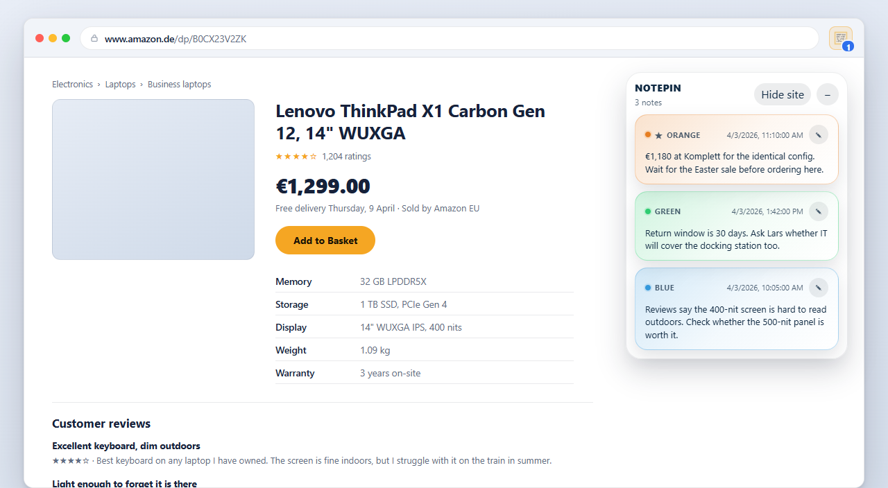
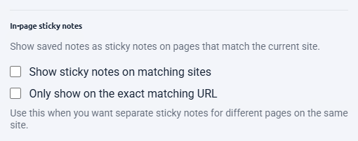
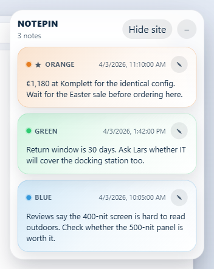

The idea
What in-page sticky notes are
Your notes for a site, shown on that site, in a small floating panel.

Nothing is added to the website. The panel is drawn by the extension inside your own browser, from notes stored in your own browser profile. The site's owner cannot see it, other visitors cannot see it, and the page's own code is not modified.
What makes it useful is the matching. You do not place a note at a position on a page; you save a note against an address, and the panel shows every note whose address matches wherever you currently are. Come back in a month and the note is there because the address is the same, not because a paragraph happened to stay in the same place.
Setup
Turning them on
The feature ships switched off. Nothing appears on any page until you deliberately enable it.

- Open Settings from the popup or the board.
- Tick Show sticky notes on matching sites.
- Your browser asks for permission to read and change data on websites. This is what lets NotePin draw the panel on a page. Accept it to continue.
- The panel appears on any site where you already have notes, including tabs that are already open.
The interface
The panel, control by control

| Control | What it does |
|---|---|
| Drag the header | Snaps the panel to any of the four screen corners. Your choice is remembered per browser. |
| − / + | Collapses the panel to its header, or expands it again. Remembered per site. |
| Hide site | Hides the panel on this site for 24 hours. |
| Filter box | Appears once a site has five or more notes. Narrows the panel's list. |
| Pencil on a card | Opens a dedicated editor window for that note. |
Hide site is the pressure valve. If the panel is in the way during a task — filling in a long form, reading something carefully — one click gets you a day of quiet without turning the feature off or deleting anything. It comes back by itself tomorrow.
Each card shows the note's colour label, so if you have named your colours in Settings → Color labels, those names appear here too.
Behaviour
Whole site or one exact page
By default the panel shows notes for the whole site. Site matching treats www,
the main domain, and its subdomains as one place: a note saved on
www.example.com or app.example.com shows when you are on
example.com, and the other way round. Two different subdomains —
a.example.com and b.example.com — stay separate, and a lookalike
domain such as notexample.com never matches.
Turn on Only show on the exact matching URL in Settings if you would rather each page show only its own notes. That is the better mode on sites where every page is a different topic — a documentation site, a wiki, a large storefront — because otherwise every page inherits every note you have made anywhere on the domain.
Behaviour
Why they never print
This is a deliberate design decision rather than an oversight, and it is worth understanding because it affects how freely you can use the feature.
Annotations are private and often blunt. "Overpriced, check the other quote" is a perfectly reasonable note to leave on a supplier's page and a catastrophic thing to include in a PDF you forward to that supplier. Because the panel is excluded from print output, a page you print looks exactly as it would if the extension were not installed — so you never have to remember to hide anything first.
Comparison
Against desktop sticky notes
Most sticky-note tools put a yellow square on your desktop. That is a different product.
Desktop sticky notes — the Windows app, the various virtual sticky note tools — are a scratchpad that floats over everything you do. They are good at short-lived reminders and bad at anything you need to find again, because a hundred of them is a hundred squares.
| Desktop sticky notes | In-page sticky notes | |
|---|---|---|
| Where the note lives | On your screen, always | On the website it is about |
| How you find one | You look through them | It appears when you arrive |
| Tied to a source | No | Yes — the address is stored |
| Scales to hundreds | Poorly | Yes — only matching ones show |
| Searchable | Sometimes | Yes, including by domain |
| Visible while you work | Always | Only on relevant sites |
The distinction that matters: a desktop sticky note asks you to remember to look at it. An in-page one waits at the place where you will need it. If your note is "call the dentist", a desktop app is right. If it is "their support hours are wrong on this page, the real ones are in the footer", it belongs on the page.
Your data
Permissions and privacy
Drawing anything onto a page requires permission to run on that page. There is no way around that, and any extension claiming otherwise is not doing what it says.
| Permission | Why |
|---|---|
storage | To save and sync your notes, and to keep local preferences such as popup size. |
activeTab | To read the address of the tab you are on, for the badge count and to attach to new notes. |
contextMenus | To add the right-click entries. |
scripting | To add or remove the in-page sticky note script when you turn that feature on or off. |
| Website access (optional) | Requested only if you enable in-page sticky notes. Never at install. |
What that access is used for is narrow: drawing the panel and reading the current address to decide which notes match. Your notes stay in your browser. There is no NotePin server, no account, and no analytics inside the extension. The full policy is on the privacy page.
In practice
What people use them for
- Shopping. The price you saw last month, on the product page, so you know whether the "sale" is one.
- Suppliers and vendors. Who you spoke to, what they promised, which quote is current.
- Documentation. The workaround for the bit that is wrong, on the page that is wrong.
- Accounts and services. Which email address you signed up with, and when the renewal falls.
- Recurring reading. Where you stopped, on a long reference page you return to.
The pattern in all of these is the same: information that is worthless in a general notes app because you would never think to go looking for it, and valuable on the page because it arrives exactly when it is relevant.
Answers
Common questions
Can you put sticky notes on a website?
Yes, with a browser extension. NotePin shows your saved notes for a site in a small floating panel on that site. The notes are yours and live in your browser — nothing is added to the website itself, and no other visitor sees them. Turn the feature on in Settings under In-page sticky notes.
Is there a sticky notes extension for Chrome?
Several exist, and they split into two kinds. Some are a scratchpad that floats over every page regardless of where you are. Others, including NotePin, tie each note to the address it was written on, so notes about one site only appear on that site. The second kind is more useful if the note is about the page rather than just written while you happened to be there.
Do sticky notes show up when I print a page?
No. The sticky panel is hidden from print output and from Save as PDF, so a page you print looks exactly as it would without the extension installed. This is deliberate — private annotations should not leak into a document you send to someone else.
Why does a sticky notes extension need access to website content?
Drawing a panel onto a page requires permission to run on that page. NotePin does not request this at install — it asks only if you switch in-page sticky notes on, and turning the feature off removes the script again. Every other part of NotePin works without it.
Where to go next
To get text onto a note in the first place, read saving selected text. To manage a large collection, see a better bookmark manager. The manual's sticky notes section is the full reference.